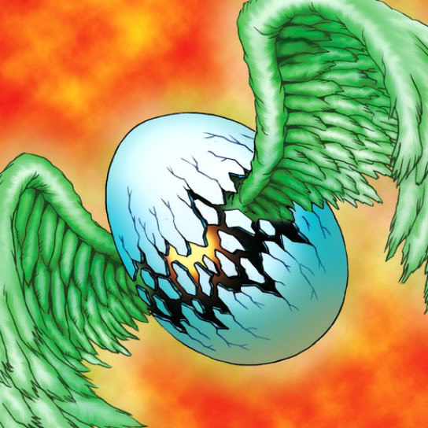

Wing Egg Elf

Description: "Randomly transforms to a monster with ""Elf"" in its name when strengthened with Insect Imitation."
STATS
ATK: 500
DEF: 1300DECK COST
Deck Cost per Card: 23EFFECT NOT IMPLEMENTED
Fusion List (20 Possible Fusions)
- Wing Egg Elf + Ancient Sorcerer = Dark Elf
- Wing Egg Elf + Dancing Elf = Mystical Elf
- Wing Egg Elf + Goddess of Whim = Dark Witch
- Wing Egg Elf + Goddess with the Third Eye = Dark Witch
- Wing Egg Elf + Greenkappa = Celtic Guardian
- Wing Egg Elf + Happy Lover = Mystical Elf
- Wing Egg Elf + Hoshiningen = Mystical Elf
- Wing Egg Elf + Hourglass of Life = Mystical Elf
- Wing Egg Elf + Key Mace = Mystical Elf
- Wing Egg Elf + Lunar Queen Elzaim = Mystical Elf
- Wing Egg Elf + M-Warrior #2 = Celtic Guardian
- Wing Egg Elf + Masked Clown = Dark Elf
- Wing Egg Elf + Megirus Light = Dark Elf
- Wing Egg Elf + Phantom Dewan = Dark Elf
- Wing Egg Elf + Sectarian of Secrets = Dark Elf
- Wing Egg Elf + Supporter in the Shadows = Celtic Guardian
- Wing Egg Elf + Swordsman from a Foreign Land = Celtic Guardian
- Wing Egg Elf + The Bewitching Phantom Thief = Dark Elf
- Wing Egg Elf + Weather Control = Mystical Elf
- Wing Egg Elf + Wing Egg Elf = Mystical Elf